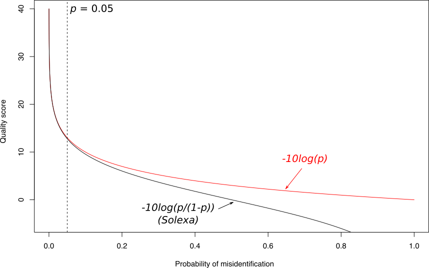

<!doctype html>
<html lang="en">

	<head>
		<meta charset="utf-8">

		<title>Quality control of NGS data</title>

		<link rel="stylesheet" href="../../shared/reveal.js/css/reveal.css">
		<link rel="stylesheet" href="../../shared/reveal.js/css/theme/simple.css" id="theme">

		<!-- Code syntax highlighting -->
		<link rel="stylesheet" href="../../shared/reveal.js/lib/css/zenburn.css">

		<link rel="stylesheet" href="../../shared/css/custom.css" id="theme">

		<!-- Printing and PDF exports -->
        <script>
          if( window.location.search.match( /print-pdf/gi ) ) {
            var link = document.createElement( 'link' );
            link.rel = 'stylesheet';
            link.type = 'text/css';
            link.href = '../../shared/reveal.js/css/print/pdf.css';
            document.getElementsByTagName( 'head' )[0].appendChild( link );
          }
        </script>
		<!--<script>
            if (window.location.search.match(/print-pdf/gi)) {
                document.write('<link rel="stylesheet" href="css/pdf.css" type="text/css">');
            }
        </script>-->

		<!--[if lt IE 9]>
        <script src="../../shared/reveal.js/lib/js/html5shiv.js"></script>
        <![endif]-->
	</head>

	<body>
		<div class="reveal">
            <div class="slides">
                <section data-markdown>
                    <script type="text/template">
                        ## Welcome!

                        

                        The easiest way to **navigate** this slide deck
                        is **by hitting `[space]` on your keyboard**

                        You can also navigate with arrow keys, but be careful because some
                        slides can be nested inside of each other (vertically)
                    </script>
                </section>

                <section data-markdown>
                    <script type="text/template">
                        # Quality control of NGS data
                    </script>
                </section>

                <section>
                    <section data-markdown>
                        <script type="text/template">
                            ## Why quality control?
                        </script>
                    </section>

                    <section data-markdown>
                        <script type="text/template">
                            ### Subpart1.1

                            - list
                            - list
                            - list
                        </script>
                    </section>

                    <section data-markdown>
                        <script type="text/template">
                            ### Subpart1.2

                            With an image...

                            
                        </script>
                    </section>
                </section>

                <section>
                    <section data-markdown>
                        <script type="text/template">
                            ## FastQ file
                        </script>
                    </section>

                    <section data-markdown>
                        <script type="text/template">
                            ### FastA vs FastQ

                            ```
                            > Identifiant (Commentaire)
                            XXXXXXXXXXXXXXXXXXXXXXXXXXXXXXXXXXXXXXXXXXXXXXXXXXXXXXXXXXXX
                            XXXXXXXXXXXXXXXXXXXXXXXXXXXXXXXXXXXXXXXXXXXXXXXXXXXXXXXXXXXX
                            XXXXXXXXXXXXXXXXXXXXXXXXXXXXXXXXXXXXXX
                            > Identifiant2 (Commentaire)
                            XXXXXXXXXXXXXXXXXXXXXXXXXXXXXXXXXXXXXXXXXXXXXXXXXXXXXXXXXXXX
                            XXXXXXXXXXXXXXXXXXXXXXXXXXXXXXXXXXXXXXXXXXXXXXXXXXXXXXXXXXXX
                            XXXXXXXXXXXXXXXXXXXXXXXXXXXXXXXXXXXXXXXXXXXXXXXXXXXXXXXXXXXX
                            XXXXXXXXXXXXXXXXXXXXXXXXXXXXXXXXXXXXXXXXXXXXXXXXXXXXXXXXXXXX
                            XX
                            ```

                            ```
                            > Identifiant (Commentaire)
                            XXXXXXXXXXXXXXXXXXXXXXXXXXXXXXXXXXXXXXXXXXXXXXXXXXXXXXX
                            +
                            QQQQQQQQQQQQQQQQQQQQQQQQQQQQQQQQQQQQQQQQQQQQQQQQQQQQQQQ
                            > Identifiant2 (Commentaire)
                            XXXXXXXXXXXXXXXXXXXXXXXXXXXXXXXXXXXXXXXXXXXXXXXXXXXXXXXXXXXXXXXXXX
                            +
                            QQQQQQQQQQQQQQQQQQQQQQQQQQQQQQQQQQQQQQQQQQQQQQQQQQQQQQQQQQQQQQQQQQ
                            ```

                        </script>
                    </section>

                    <section data-markdown>
                        <script type="text/template">
                            ### Quality score

                            Measure of the quality of the identification of the nucleobases generated by automated DNA sequencing

                            <small>

                            Phred Quality Score | Probability of incorrect base call | Base call accuracy
                            --- | --- | ---
                            10 | 1 in 10 | 90%
                            20 | 1 in 100 | 99%
                            30 | 1 in 1000 | 99.9%
                            40 | 1 in 10,000 | 99.99%
                            50 | 1 in 100,000 | 99.999%
                            60 | 1 in 1,000,000 | 99.9999%

                            </small>
                        </script>
                    </section>

                    <section data-markdown>
                        <script type="text/template">
                            ### Quality score

                            
                        </script>
                    </section>

                    <section data-markdown>
                        <script type="text/template">
                            ### Quality score encoding

                            
                        </script>
                    </section>
                </section>


                <section data-markdown>
                    <script type="text/template">
                        ### Tutorial

                        - [Dive into Quality Control](dive_into_qc.html)
                    </script>
                </section>
			</div>

		</div>

		<script type="text/javascript" src="../../shared/reveal.js/lib/js/head.min.js"></script>
        <script type="text/javascript" src="../../shared/reveal.js/js/reveal.js"></script>
        <script type="text/javascript">
            Reveal.initialize({
                slideNumber: !window.location.search.match(/print-pdf/gi),
                history: true,

                theme: Reveal.getQueryHash().theme,
                transition: Reveal.getQueryHash().transition || 'concave',

                dependencies: [
                    { src: '../../shared/reveal.js/lib/js/classList.js', condition: function() { return !document.body.classList; } },
                    { src: '../../shared/reveal.js/plugin/markdown/marked.js', condition: function() { return !!document.querySelector( '[data-markdown]' ); } },
                    { src: '../../shared/reveal.js/plugin/markdown/markdown.js', condition: function() { return !!document.querySelector( '[data-markdown]' ); } },
                    { src: '../../shared/js/highlight.js', async: true, callback: function() { hljs.initHighlightingOnLoad(); } },
                    { src: '../../shared/reveal.js/plugin/notes/notes.js', async: true },
                ]
            });
        </script>

	</body>
</html>
